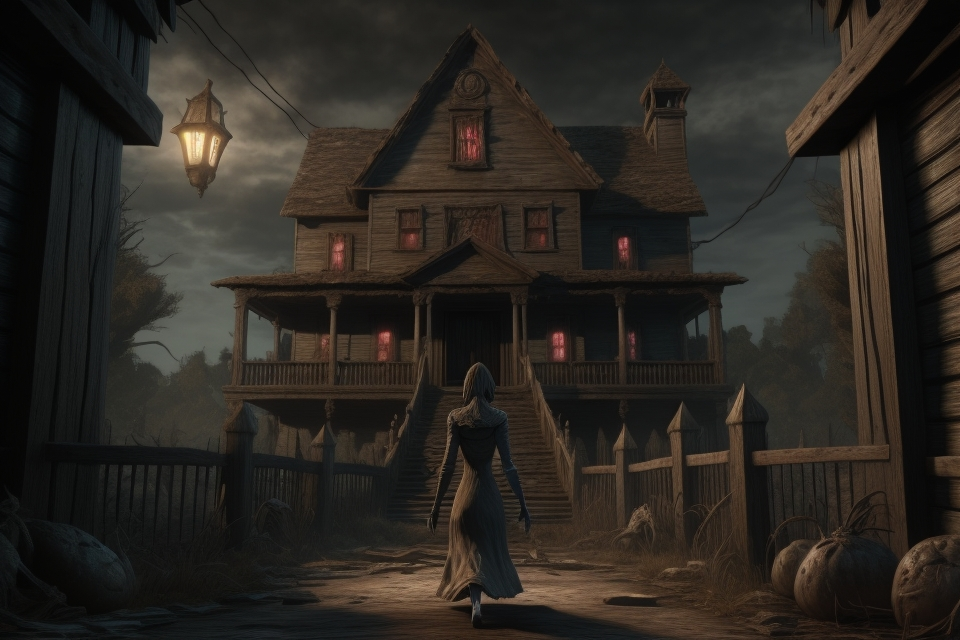
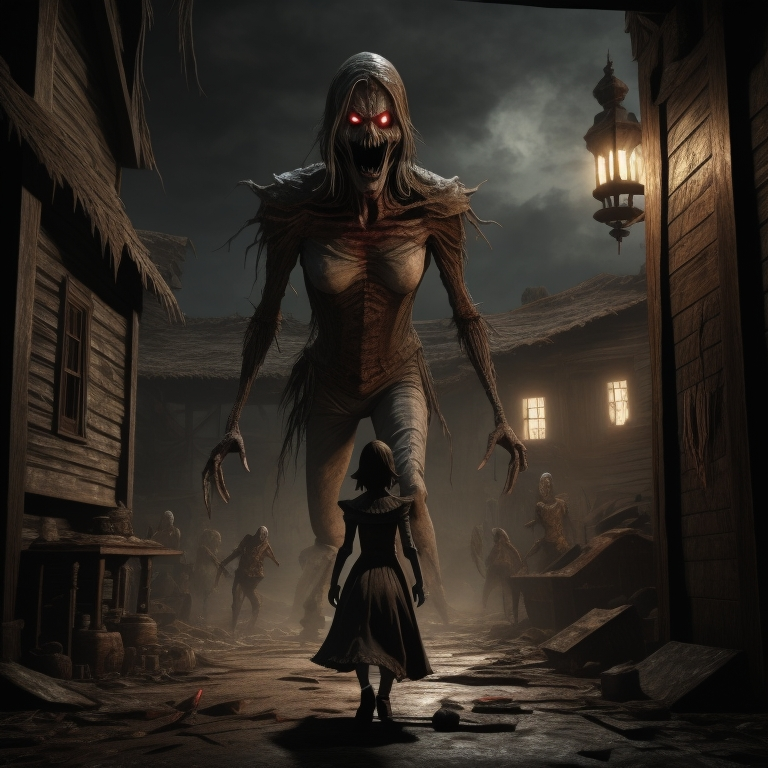
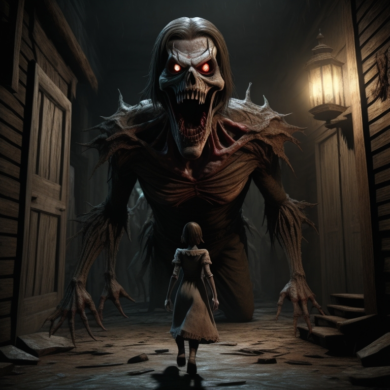
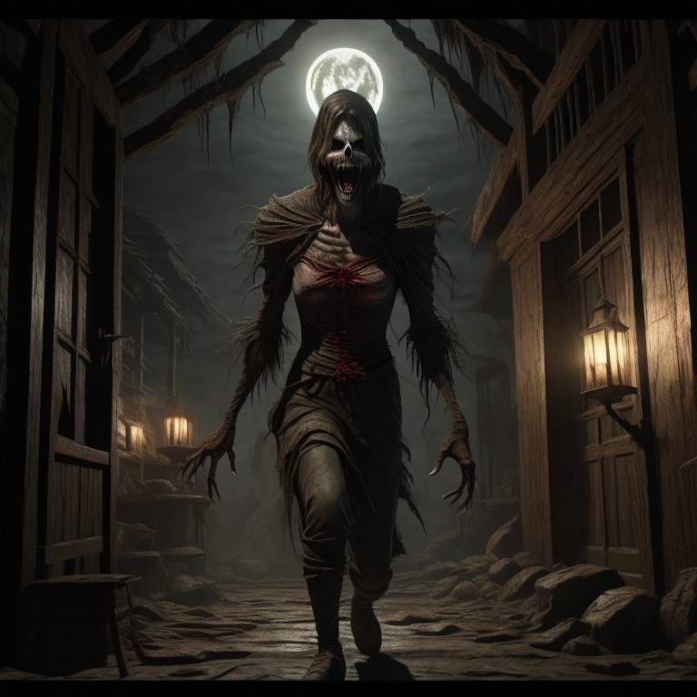

Em um pitoresco vilarejo chamado Vale das Colinas, rodeado por campos verdejantes e montanhas majestosas, havia uma antiga casa no topo de uma colina. A casa era conhecida por ser assombrada por um temível monstro. Durante o dia, as pessoas evitavam passar por perto da casa, e à noite, o lugar se tornava um tabu, envolto em histórias sombrias que eram passadas de geração em geração. No entanto, em meio a esse medo coletivo, havia uma menina chamada Sofia. Ela era destemida e possuía uma curiosidade inesgotável. Desde pequena, ela se fascinava pelas histórias de mistério e aventura. Certo dia, movida por sua coragem e pelo desejo de desvendar segredos, Sofia decidiu explorar a casa assombrada.
Em uma noite de lua cheia, quando o vilarejo estava envolto em um manto de silêncio, Sofia se aventurou em direção à casa proibida. Ela caminhou por entre as árvores e alcançou o portão enferrujado. Com o coração acelerado, empurrou-o lentamente e adentrou o quintal abandonado. A casa se erguia à sua frente, escura e misteriosa. Sofia engoliu o medo e deu um passo adiante. Ao entrar, foi recebida por uma atmosfera de mistério e encantamento. As paredes estavam cobertas de trepadeiras e a mobília estava coberta por lençóis empoeirados. Era evidente que ali residia um passado esquecido.
Enquanto explorava os cômodos, Sofia deparou-se com uma porta trancada. Sua curiosidade atiçada, ela decidiu encontrar uma maneira de abri-la. Vasculhou o sótão em busca de chaves antigas e, finalmente, encontrou uma pequena chave de bronze. Com a chave em mãos, ela voltou à porta e a destrancou cuidadosamente. Ao abrir a porta, Sofia descobriu um quarto secreto. No centro do aposento, havia uma imponente estátua de pedra. A figura representava um monstro de olhos faiscantes e garras afiadas. Sofia sentiu um arrepio percorrer sua espinha, mas algo na expressão do monstro a intrigava.
Enquanto observava a estátua, uma voz suave ecoou no quarto. Era uma voz triste e melancólica. "Você não tem medo de mim?", perguntou o monstro. Sofia, sem hesitar, respondeu: "Eu não vim aqui para ter medo de você. Vim para entender."
O monstro revelou sua história à menina. Ele era, na verdade, uma criatura amaldiçoada por um feitiço antigo. Havia sido aprisionado na estátua há séculos, esperando pelo dia em que alguém corajoso o encontraria e quebraria o feitiço. Sofia percebeu que sua coragem não era em vão. Ela estava destinada a libertar o monstro e trazer paz ao vilarejo. Com dedicação e determinação, estudou livros de feitiçaria e descobriu uma maneira de quebrar a maldição.
Em uma noite especial, Sofia retornou à casa assombrada com um objeto mágico nas mãos. Ela recitou as palavras de desencantamento e, diante de seus olhos, a estátua começou a se desfazer em pó. Quando o último grão de poeira se dispersou, o monstro estava livre. Mas ao invés de uma criatura aterrorizante, ele se revelou como um espírito gentil e benevolente. Agradecido a Sofia por sua coragem e compaixão, o monstro prometeu proteger o vilarejo e ser seu guardião eterno.
A notícia da libertação do monstro se espalhou pelo Vale das Colinas. As pessoas, inicialmente temerosas, começaram a compreender que o monstro não era uma ameaça, mas sim uma força protetora. Gradualmente, a casa assombrada foi transformada em um símbolo de coragem e união.
Sofia e o monstro tornaram-se amigos inseparáveis, e o vilarejo viveu em paz e harmonia. A lenda da casa assombrada pelo monstro foi reinterpretada como um conto de superação do medo e descoberta da verdadeira essência das coisas. E assim, o vilarejo de Vale das Colinas aprendeu que nem tudo é o que parece, e que, por trás das aparências assustadoras, pode-se encontrar amizade, compaixão e a verdadeira essência da bondade.